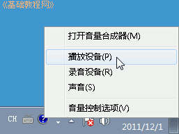
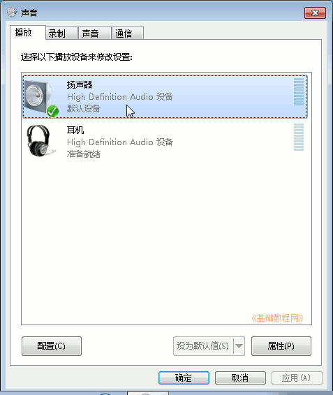
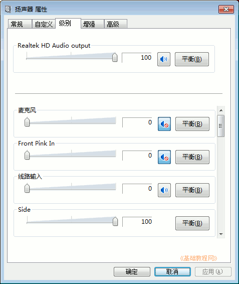

Windows7 基础入门教程
作者：TeliuTe 来源：基础教程网
二十一、调节音量 返回目录 下一课在听音乐或者看视频时，需要调整音量，有时候也需要把声音关闭，设置成静音，
1、调节音量
1）在桌面下边的任务栏右边有一个“系统托盘”，里面有一个小喇叭图标，这个就是音量控制图标；
2）瞄准小喇叭，单击鼠标左键，注意瞄准了再点，就可以出来一个小面板，里面有一个滑块；
3）上下拖动中间的滑块，就可以改变音量大小，同时音箱里会发出“咚”的一声；
4）点击滑块下边的小喇叭图标，就可以关闭声音，音箱里没有声音了，
小喇叭上出现一个红色的圈，表示处于静音状态，再点一下声音又出来了；
2、设备属性
1）瞄准任务栏托盘里的小喇叭点右键，在出来的菜单中有几个选项，点“播放设备”，可以打开属性面板；

2）其中打勾的是默认设备，选中点下边的属性按钮，还会出来一个面板，里面可以调节音量级别等；

3）在属性面板中，点上边的“级别”，可以调节各个音量选项；

本节学习了调节音量大小的基础知识，如果你成功地完成了练习，请继续学习下一课内容；
本教程由86团学校TeliuTe制作|著作权所有
基础教程网：>http://teliute.org/
美丽的校园……
转载和引用本站内容，请保留作者和本站链接。